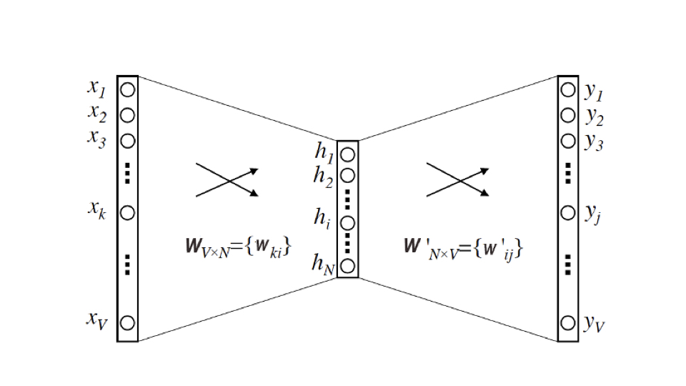
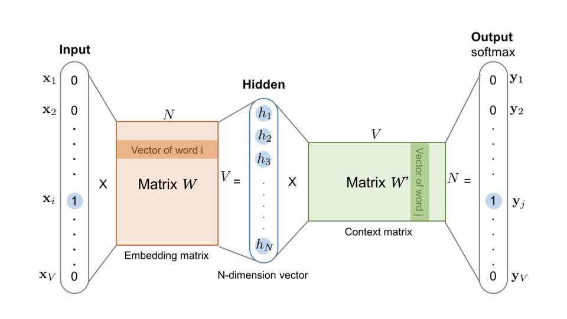

特征工程¶
特征工程简介¶
我们已经知道，推荐系统就是利用“用户信息”“物品信息”“场景信息”这三大部分有价值数据，通过构建推荐模型得出推荐列表的工程系统。
在这个系统之中，特征工程就是利用工程手段从“用户信息”“物品信息”“场景信息”中提取特征的过程。
构建推荐系统特征工程的原则¶
特征工程往往会造成信息损失，而且我们也不可能对所有原始数据都做特征工程，那么有什么原则可以指导我们构建特征工程呢？
推荐系统特征工程的原则：尽可能地让特征工程抽取出的一组特征，能保留推荐环境及用户行为过程中所有的”有用“信息，并且尽量摒弃冗余信息。
推荐系统中的常用特征¶
其一是用户行为数据，它是推荐系统最常用，也是最关键的数据。
用户潜在的兴趣、用户对物品的评价都包含在用户的行为历史中。用户行为又可分为显性和隐形，如下图：

其二是用户关系数据，”物以类聚、人以群分“。
其三是属性、标签类数据，直接描述用户或物品的特征。

其四是内容类数据，内容类数据往往是大段文字、图片甚至视频。我们需要通过自然语言处理、计算机视觉等手段提取关键内容特征，不然推荐系统将没法”消化“。
其五是场景（上下文）信息，如时间、地点等。
使用spark处理特征¶
spark是一个分布式计算平台。所谓分布式，指的是计算节点之间不共享内存，需要通过网络通信的方式交换数据。spark计算集群能够比单机高性能服务器具备更强大的计算能力，是由这些成百上千的工作节点并行工作带来的。
spark程序由manager node（管理节点）进行调度组织，由worker node（工作节点）具体计算，最终结果返回driver program（驱动程序）上。在物理的worker node上，数据还会分为不同的partition（数据分片），它是spark的基础数据单元。

那么spark是怎么协同节点进行工作的呢？总的来说，在spark处理任务的时候，会将它拆成子任务的DAG（有向无环图），再根据DAG决定各步骤执行的方法。

上面是一个典型的DAG。
上面的算子分为两种，一种如map、filter等仅需逐条处理，无需数据交换。
另一种如groupbyKey和join操作，需要shuffle（混洗）进行数据交换。shuffle操作很耗资源，应是尽量避免的。
被shuffle操作分割的DAG：
注：若是单机处理数据，可以用pandas替代spark
使用one-hot编码处理类别型特征¶
from pyspark.ml.feature import OneHotEncoder
from pyspark.sql import SparkSession
#创建SparkSession对象，配置spark
spark = SparkSession.builder.master('local').appName('OneHotEncoderDemo').getOrCreate()
#创建DataFrame对象
df = spark.createDataFrame([
(0.0, 1.0),
(1.0, 2.0),
(2.0, 3.0),
(0.0, 4.0),
(0.0, 5.0),
(2.0, 6.0)
], ["categoryIndex1", "categoryIndex2"])
#设置OneHotEncoder
encoder = OneHotEncoder(inputCols=["categoryIndex1", "categoryIndex2"],
outputCols=["categoryVec1", "categoryVec2"])
#fit
model = encoder.fit(df)
#transform
encoded = model.transform(df)
#show
encoded.show()
+--------------+--------------+-------------+-------------+
|categoryIndex1|categoryIndex2| categoryVec1| categoryVec2|
+--------------+--------------+-------------+-------------+
| 0.0| 1.0|(2,[0],[1.0])|(6,[1],[1.0])|
| 1.0| 2.0|(2,[1],[1.0])|(6,[2],[1.0])|
| 2.0| 3.0| (2,[],[])|(6,[3],[1.0])|
| 0.0| 4.0|(2,[0],[1.0])|(6,[4],[1.0])|
| 0.0| 5.0|(2,[0],[1.0])|(6,[5],[1.0])|
| 2.0| 6.0| (2,[],[])| (6,[],[])|
+--------------+--------------+-------------+-------------+
可以看出之前df中的值被转为了稀疏向量（dims, [index], [value]）
from pyspark.sql import DataFrame
from pyspark.sql.types import *
from pyspark.sql import functions as F
def oneHotEncoderExample(movieSamples: DataFrame):
"""将movieSamples中的movieId列转化为OneHot的movieIdVector"""
samplesWithIdNumber = movieSamples.withColumn("movieIdNumber", F.col("movieId").cast(IntegerType()))
encoder = OneHotEncoder(inputCols=["movieIdNumber"], outputCols=['movieIdVector'], dropLast=False)
oneHotEncoderSamples = encoder.fit(samplesWithIdNumber).transform(samplesWithIdNumber)
oneHotEncoderSamples.printSchema()
oneHotEncoderSamples.show()
使用归一化和分桶处理数值型特征¶
from pyspark.ml import Pipeline
from pyspark.ml.feature import QuantileDiscretizer, MinMaxScaler
from pyspark.ml.linalg import VectorUDT, Vectors
from pyspark.sql import DataFrame
from pyspark.sql import functions as F
def ratingFeatures(ratingSamples: DataFrame):
"""将ratingCount分成100个桶，依照平均评分的最小最大值归一化"""
ratingSamples.printSchema()
ratingSamples.show()
# calculate average movie rating score and rating count
movieFeatures = ratingSamples.groupBy('movieId').agg(F.count(F.lit(1)).alias('ratingCount'),
F.avg("rating").alias("avgRating")) \
.withColumn('avgRatingVec', F.udf(lambda x: Vectors.dense(x), VectorUDT())('avgRating'))
movieFeatures.show()
# bucketing
ratingCountDiscretizer = QuantileDiscretizer(numBuckets=100, inputCol="ratingCount", outputCol="ratingCountBucket")
# Normalization
ratingScaler = MinMaxScaler(inputCol="avgRatingVec", outputCol="scaleAvgRating")
featurePipeline = Pipeline(stages=[ratingCountDiscretizer, ratingScaler])
movieProcessedFeatures = featurePipeline.fit(movieFeatures).transform(movieFeatures)
movieProcessedFeatures.show(10)
Embedding¶
简单来说，Embedding就是用一个数值向量表示一个对象（Object）的方法。
这里对象可以是一个词，一个商品也可以是一部电影。
“表示”可以解释为：一个物品能被向量“表示”，是因为这个向量和其他物品向量之间的距离反映了这些物品的相似性。
还是太抽象了，举两个例子来进行解释。
矩阵分解¶
第一个例子是矩阵分解算法，用户id（如果是大平台的话数量是上亿）和物品id被表示为了用户向量（比如说100维）和物品向量，且Embedding向量保存着他们的相似性关系：
Embedding的作用：
1.Embedding是处理稀疏数据的利器，比如说各种类别型，id型特征。
2.Embedding可以融合大量的有价值信息，是极其重要的特征向量
Word2vec¶
Word2vec可以将英文中的各个单词（数量是几十万）表示为较低维向量（比如说300维），若使用one-hot向量表示单词，则需要几十万维。
而且这些词Embedding向量可以揭示单词之间的关系，比如说近义词的向量比较相似，比如说可以揭示词之间的性别信息、时态信息：
上图即：
和：
要训练word2vec模型，需要准备一组句子组成的语料库，假设其中一个长度为\(T\)的句子包含的词为\(w_{1},w_{2},...,w_{T}\)，并且我们假定每个词和它的相邻词关系最密切。
word2vec模型分两种：
1、CBOW由相邻的几个词预测中间的词。
2、Skip-gram由中间的词预测相邻的词。

以skip-gram为例进行说明。
word2vec的模型是一个两层神经网络，输入层和输出层的维度为单词数\(V\)（一般为数万），隐藏层的维度为我们所期望的Embedding向量维度\(N\)（一般为数百）。
输入是one-hot向量，输出是multi-hot向量（如果window_size=2就是4-hot向量）。

最后训练出的输入-隐藏层参数就是我们需要的Embedding向量。
它是一个\(V\times{N}\)的矩阵，矩阵第 \(i\) 行向量是第 \(i\) 个单词为输入时的隐藏层向量，他拥有第 \(i\) 个单词周围单词分布的信息，因此他就是第 \(i\) 个单词的Embedding。

Graph Embedding¶
互联网的数据不仅仅有序列数据（可用word2vec的推广item2vec处理），越来越多的数据被我们以图的形式展现出来：

这时候，我们需要专门的方法来将图中的节点embedding化。
基于随机游走的deep-walk¶
deep-walk的执行过程如下图所示：

a.得到原始的用户行为序列
b.构建物品关系图
c.随机选择起始点，然后随机游走（有多条出边时随机选一条），随机游走的采样次数、长度都是超参数，需要我们具体调整。
d.使用word2vec训练序列数据，得到节点的embedding。
同质性和结构性的权衡，Node2vec¶
node2vec在deep-walk的基础上，让我们可以在网络的同质性(Homophily)和结构性(Structural Equivalence)中进行权衡。
同质性：距离相近的节点的Embedding应该尽量相似。
结构性：结构上相似的节点的Emebdding应该尽量相似。

上面 \(u\) 和 \(s_{6}\) 都是各区域中的中心节点，按照结构性来说，它们的embedding应该相似。
为了使graph embedding更倾向于表达同质性，随机游走要倾向于DFS（深度优先搜索），使得随机游走能更可能跳到远方节点。
反之，为了表达结构性，随机游走要倾向于BFS（广度优先搜索），使得随机游走更多在当前邻域游走，捕捉局部结构信息。
node2vec通过控制节点间的跳转概率来控制倾向性。
下图中 \(v\) 为当前节点，\(t\) 为前一个节点，现在要确定 \(v\) 跳转至其他节点的概率。

设 \(w_{vx}\) 是边的原始权重，它即原始的用户行为序列中这条边出现的次数。
对于deep-walk，跳转概率正比于 \(w_{vx}\)。
而node2vec在原始权重的基础上，还会分三种情况考虑
1.\(x\) 即前一个节点 \(t\)，原始权重需乘以 \(\frac{1}{p}\)， \(p\) 是超参数
2.\(x\) 和前一个节点 \(t\) 相连
3.\(x\) 不和前一个节点 \(t\) 相连，原始权重需乘以 \(\frac{1}{q}\)， \(q\)是超参数
即：
我们设定的 \(q\) 越小\(\Rightarrow\)随机游走至远方的可能性越大\(\Rightarrow\)更倾向于DFS\(\Rightarrow\)倾向于表达同质性
我们设定的 \(p\) 越小\(\Rightarrow\)随机游走返回 \(t\) 的可能性越大\(\Rightarrow\)更倾向于BFS\(\Rightarrow\)倾向于表达结构性